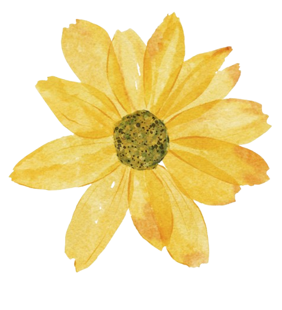

o que é o setembro amarelo?

O Setembro Amarelo é uma campanha nacional de conscientização sobre a prevenção ao suicídio, realizada todos os anos durante o mês de setembro. Criada em 2015 no Brasil, a iniciativa é promovida pela Associação Brasileira de Psiquiatria (ABP) em parceria com o Conselho Federal de Medicina (CFM), e tem como objetivo quebrar tabus, reduzir o estigma e incentivar o diálogo sobre saúde mental.
Por que setembro?

O 10 de setembro é reconhecido mundialmente como o Dia Internacional de Prevenção ao Suicídio. Durante todo o mês, instituições, escolas, empresas e órgãos públicos se mobilizam para sensibilizar a população e oferecer informações e apoio a quem precisa.
A importância da campanha

Problema De Saúde Pública.

700 mil pessoas morrem por suicídio todos os anos.

1 Morte a cada 46 minutos.
A maioria dos casos pode ser evitada com apoio psicológico, acompanhamento médico e uma rede de acolhimento.
Como ajudar?

- Ouça sem julgamentos: muitas vezes, a pessoa só precisa ser acolhida.
- Ofereça apoio e companhia: pequenas atitudes podem fazer diferença.
- Incentive a busca por ajuda profissional: psicólogos, psiquiatras e grupos de apoio são fundamentais.
- Compartilhe informações seguras: evite conteúdos que romantizem ou incentivem o sofrimento.
Onde buscar ajuda?
Se você ou alguém que você conhece está passando por um momento difícil, não hesite em pedir ajuda.
CVV - Centro de Valorização da Vida: atendimento gratuito e sigiloso 24 horas por dia pelo telefone 188 ou pelo site cvv.org.br.
Unidades de saúde (SUS): atendimento psicológico e psiquiátrico gratuito.
UPAs e Hospitais em casos de emergência.
Como participar da campanha?
Ilumine prédios e monumentos de amarelo.
Promova palestras, rodas de conversa e ações educativas.
Compartilhe conteúdos informativos nas redes sociais.
Vista-se de amarelo e ajude a espalhar a mensagem de esperança.
Falar sobre saúde mental é um ato de coragem e amor. O Setembro Amarelo nos lembra que a vida importa e que ninguém precisa enfrentar a dor sozinho. A prevenção começa com informação, empatia e acolhimento.